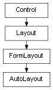

class cymel.ui.layout.AutoLayout¶

-
class
cymel.ui.layout.AutoLayout(arg0=None, horizontal=False, spacing=1, sideSpacing=None, reversed=False, ratios=None, adjustIndex=None, **kwargs)¶ ベースクラス:
cymel.ui.uitypes.FormLayoutFormLayoutに自動レイアウト機能を追加したもの。初期化。
パラメータ: Methods:
__init__([arg0, horizontal, spacing, ...])初期化。 redistribute([ratios, adjustIndex])子のコントロールを再配置する。 Methods Details:
-
__init__(arg0=None, horizontal=False, spacing=1, sideSpacing=None, reversed=False, ratios=None, adjustIndex=None, **kwargs)¶ 初期化。
パラメータ:
-